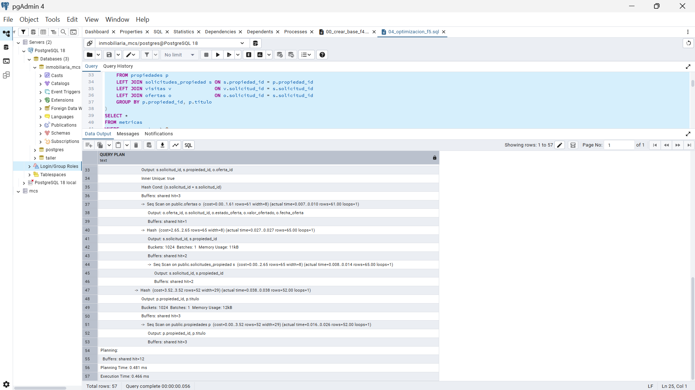
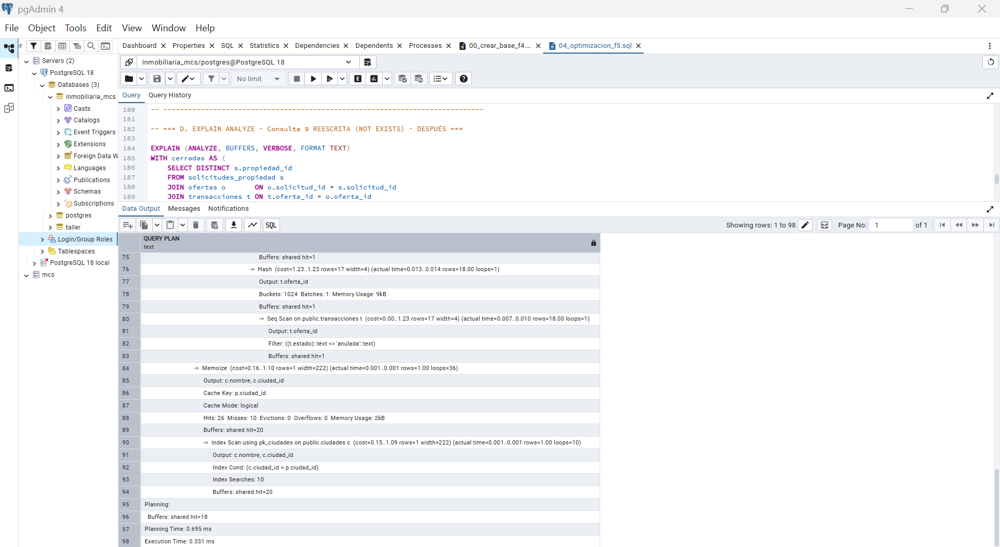
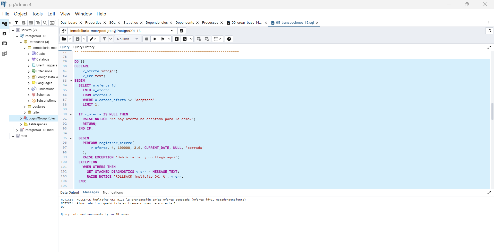

Optimización y transacciones
Equipo: Harold Burgos, Sofía Camelo, Juan Triana Base: inmobiliaria_mcs (PostgreSQL 18)
Medimos dos consultas del portafolio (preguntas 7 y 9) y documentamos el cierre comercial como una sola transacción. Los scripts están en esta misma carpeta (sql/04_optimizacion_f5.sql y sql/05_transacciones_f5.sql). Los planes completos quedaron en time.txt.
1. Qué medimos
La carga de la fase 4 tiene cerca de 52 propiedades, 65 solicitudes, 88 visitas y 61 ofertas. Con ese tamaño, todas las ejecuciones quedaron por debajo de 0,5 ms. No vimos una mejora de órdenes de magnitud: los índices sirven por selectividad cuando el inventario crezca, no por los microsegundos de esta muestra. La consulta 7 no bajó de tiempo después de indexar, porque el motor sigue prefiriendo Seq Scan cuando cada tabla cabe en pocas páginas.
| Consulta | Fase | Planning Time | Execution Time | Qué hizo el plan |
|---|---|---|---|---|
| 7 | Antes (A1) | 2.540 ms | 0.298 ms | GroupAggregate y Hash Join; Seq Scan en visitas, ofertas, solicitudes y propiedades |
| 7 | Después de índices (C1) | 1.175 ms | 0.428 ms | La misma estructura; el optimizador mantiene Seq Scan |
| 9 | Antes (A2) | 1.705 ms | 0.352 ms | Ventana RANK y anti-filtro NOT IN con Hash Join y Seq Scan |
| 9 | Después de índices (C2) | 1.929 ms | 0.264 ms | Sigue NOT IN. La diferencia son décimas de milisegundo: con este volumen es ruido de caché, no una mejora de escala |
| 9 reescrita con NOT EXISTS (D) | Después | 0.642 ms | 0.422 ms | Hash Anti Join e Index Scan sobre pk_ciudades |


2. Consultas que elegimos
Consulta 7 (pregunta 7)
Cuenta, por propiedad, prospectos, visitas y ofertas con tres LEFT JOIN. Es la consulta que más tablas del proceso comercial toca.
Sin índice en solicitudes_propiedad(propiedad_id), visitas(solicitud_id) y ofertas(solicitud_id), el optimizador arma Hash Join sobre Sequential Scan. Con decenas de filas el tiempo se mantiene en microsegundos; con miles de solicitudes, un Index Scan reduce lecturas.
Creamos idx_sol_propiedad_id, idx_visitas_solicitud_id e idx_ofertas_solicitud_id. La ejecución pasó de 0.298 ms a 0.428 ms y el árbol siguió en Seq Scan. El segundo corrido puede variar por caché. La justificación de esos índices queda en la escala, no en el tiempo de esta muestra.
Consulta 9 (pregunta 9)
Lista propiedades sin cierre y calcula antigüedad con la fecha de publicación y RANK().
El NOT IN materializa los propiedad_id ya cerrados. Los índices de la cadena oferta → transacción aceleran esa subconsulta. El índice parcial idx_publicaciones_propiedad_pub apoya el mínimo de fecha_publicacion solo en avisos activos.
Reescribimos el filtro como NOT EXISTS sobre una CTE cerradas. Esa versión no es la misma consulta: el mínimo de fecha solo cuenta publicaciones vigentes (FILTER (WHERE publicada)). La pregunta 9, en el script de consultas, sigue usando la primera fecha de publicación, vigente o no. La reescritura sirve para ver otro plan (Hash Anti Join y menos tiempo de planificación). No la sustituimos como respuesta oficial de la pregunta 9. Los tiempos de las capturas no coinciden con esta tabla. Son otra ejecución en la misma máquina. Lo que se compara es el tipo de plan, no el milisegundo exacto.
3. Índices
| Índice | Tabla | Para qué lo usamos |
|---|---|---|
idx_sol_propiedad_id | solicitudes_propiedad | Unir solicitudes con el inmueble (pregunta 7) |
idx_sol_campana_id | solicitudes_propiedad | Contar por campaña cuando hay campaña (pregunta 6) |
idx_sol_estado_activo | solicitudes_propiedad | Pipeline de oportunidades abiertas (pregunta 3) |
idx_visitas_solicitud_id | visitas | Unir visitas con la solicitud |
idx_ofertas_solicitud_id | ofertas | Unir ofertas con la solicitud |
idx_ofertas_estado | ofertas | Localizar ofertas aceptadas al cerrar |
idx_transacciones_oferta_id | transacciones | Saber qué ofertas ya tienen cierre |
idx_publicaciones_propiedad_pub | publicaciones | Precio vigente y antigüedad de avisos activos |
Estos índices quedan en la base después de correr el script 04.
4. El cierre como transacción
Registrar un cierre no es un solo INSERT. Al insertar en transacciones, el trigger fn_validar_y_aplicar_transaccion:
- exige que la oferta esté
aceptada; - marca la solicitud como
ganada; - deja la propiedad en
vendidaono_disponible, según la operación.
registrar_cierre hace el INSERT. El trigger corre en la misma transacción que abre el cliente con BEGIN y cierra con COMMIT. Si la oferta no está aceptada, la operación falla y no queda fila en transacciones.
El ejemplo de cierre correcto es la oferta 61 (solicitud 64, propiedad 22). Esa propiedad todavía no tiene otro cierre. La oferta 16 no sirve: es de la propiedad 3, que ya quedó cerrada con la oferta 14. La oferta 1 está pendiente: el motor avisa que la regla R12 rechazó el cierre y que no quedó fila. El aviso solo cuenta si el mensaje empieza por R12.
Las capturas f5_transaccion_commit_16.png y _02.png son de la corrida anterior. Muestran un segundo cierre de la propiedad 3. No van en el informe. Hay que volver a tomar el COMMIT de la oferta 61 y el SELECT de la propiedad 22.

Dos cierres sobre el mismo inmueble
Si dos sesiones intentan cerrar dos ofertas distintas de la misma propiedad, sin bloqueo ambas pueden hacer COMMIT y el estado comercial queda con la última escritura.
cerrar_venta_con_bloqueo toma FOR UPDATE sobre la solicitud y la propiedad. Después del bloqueo revisa que esa propiedad no esté vendida y que no tenga otro cierre vigente. Si ya lo tiene, aborta con R12 y no llama a registrar_cierre. La segunda sesión espera a la primera; al continuar, ve el cierre y falla.
Aislamiento
El cierre operativo lo dejamos en READ COMMITTED, que es el nivel por defecto de PostgreSQL, más el bloqueo explícito de fila. Las consultas 7 y 9 también se leen en ese nivel: cada sentencia ve datos confirmados. Un reporte que necesitara los mismos conteos durante toda la sesión podría usar REPEATABLE READ; en esta base no hizo falta.
| Propiedad | Cómo la vemos en la base |
|---|---|
| Atomicidad | Si la oferta no está aceptada, no queda el INSERT |
| Consistencia | Llaves foráneas, CHECK y los triggers de dueño, estado y cierre; la comisión se calcula |
| Aislamiento | READ COMMITTED y FOR UPDATE en el cierre |
| Durabilidad | Después del COMMIT el cierre permanece |